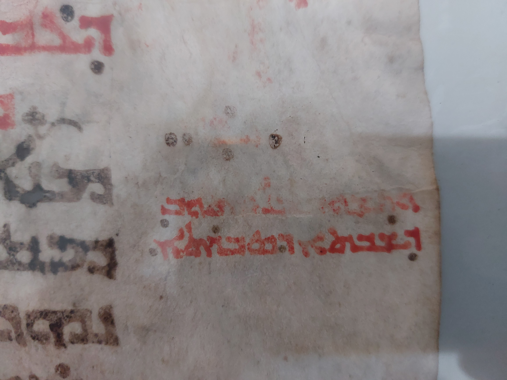
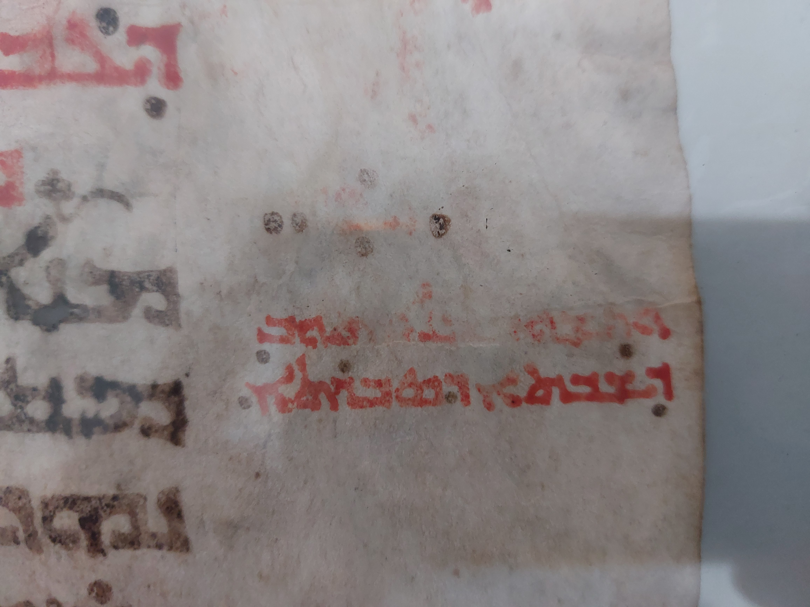

- Material: parchment / vellum
- Date: approximately 11th - 13th cent.
- Script type: Syriac Estrangelo
- Dimensions: 27.94 x 41.4 cm (two columns, 24 lines in each column); written surface: 20.32 x 31.5 cm
Short Comments:
The Ḥarqlean Syriac fragment found here as a single leaf (one folio) was originally from a Syriac Gospel Lectionary (presumably from an illustrated Syriac Gospel Lectionary). The button margin (at the foot of the leaf) of the recto side, includes a quire number (gathering signature): “ܙ” means number “7” inside a decorated and ornamented circle, although its colors faded, still on the left corner of the circle the remaining of a golden color is visible. The verso side, contains a red note in the right margin refers that the reading is dedicated for the Saturday of Light (before Easter Eve). The diamond shaped four dots at the top right corner is placed on both sides of the recto and verso.
Content:
Both readings are from the Syriac Ḥarqlean translation. The recto side includes the reading from the Gospel of Matthew 4:3b-11a. The second reading in the verso is from the Gospel of Matthew 18:12-18a.
Images:

 

Transcription:
f. 1r col. A: Mt 4:3b-7a
ܕܟܐܦ̈ܐ ܗܠܝܢ
ܠܚܡܐ ܢܗܘ̈ܝܢ܀
ܗ̣ܘ ܕܝܢ ܟܕ ܦܲܢܝ.
ܐܡܼܪ. ܟܬܼܝܒ܆ ܕܠܘ
ܒܠܚܡܐ ܒܠܚܘܕ
ܢܐܚܐ ܒܪܢܫܐ܆
ܐܠܐ ܒܟܠ ܡܠܬܐ
ܕܢ݀ܦܩܐ ܒܝܕ
ܦܘܡܗ ܕܐܠܗܐ.
ܗܝܕܝܢ ܕܒܿܪ ܠܗ
ܡܪܡܝܢܐ ܠܡܕܝܢܬܐ
ܩܕܝܫܬܐ܆ ܘܡܩܝܡ
ܠܗ ܥܝܠ ܟܢܦܐ
ܕܗܝܟܠܐ ܘܐܡܿܪ
ܠܗ. ܐܢ ܒܪܐ
ܐܝܬܝܟ ܕܐܠܗܐ܆
ܐܪܡܐ ܐܢܬ ܠܟ̣
ܡܢ ܗܪܟܐ ܠܬܚܬ.
ܟܬܝܒ ܓܝܪ
ܕܠܡ̈ܠܐܟܘܗܝ ܢܦ̇ܩܕ
ܡܛܠܬܟ ܕܢܢܛܪܘܢܟ܆
ܘܥܠ ܐܝ̈ܕܝܐ
ܢܫ̣ܩܠܘܢܟ܇ ܕܠܐ
ܡܬܘܡ ܬܬܬܩܠ
f. 1r col. B: Mt 4:7b-11a
ܒܟܐܦܐ ܒܪܓܠܐ
ܕܝܠܟ܀ ܐܡ̇ܪ ܠܗ
ܝܫܘܥ. ܬܘܒ
ܟܬܝܒ܆ ܕܠܐ ܬܢܣܐ
ܠܡܪܝܐ ܐܗܐ
ܕܝܠܟ܀ ܬܘܒ ܕܒ̇ܪ
ܠܗ ܡܪܡܝܢܐ
ܠܛܘܪܐ ܕܪܡ ܣܲܓܝ܆
ܘܡܚ̇ܘܐ ܠܗ
ܟܠܗܝܢ ܡܠܟܘ̈ܬܐ
ܕܥܠܡܐ ܘܫܘܒܚܐ
ܕܝܠܗܝܢ ܘܐܡ̇ܪ
ܠܗ. ܗܠܝܢ ܟܠܗܝܢ
ܠܟ ܐ̇ܬܠ܇ ܐܢ
ܟܕ ܬܦ̣ܠ ܬܣ̣ܓܘܕ
ܠܝ܀ ܗܝܕܝܢ ܐܡ̇ܪ
ܠܗ ܗ̣ܘ ܝܫܘܥ.
ܙܠ̣ ܠܟ ܠܒܣܬܪܝ
ܣܛܢܐ. ܟܬܝܒ
ܓܝܪ܆ ܕܠܡܪܝܐ
ܐܠܗܐ ܕܝܠܟ
ܬܣܓܘܕ܆ ܘܠܗ
ܒܠܚܘܕܘܗܝ ܬܦܠܘܚ܀
ܗܝܕܝܢ ܫܒܩܗ
At the bottom margin, there is the decorated quire number “ܙ”
f. 1v col. A: Mt 4:11b
ܐܟܠܩܪܨܐ܆ ܘܗܐ
ܡ̈ܠܐܟܐ ܩܪܒܘ
ܘܡܫܡܫܝܢ ܗܘܘ
ܠܗ܀
f. 1v col. A: Mt 18:12-14a
ܩܪܝܢܐ ܕܫܘܒܩܢܐ
ܕܥܒܕܝܢ ܒܗ ܒܝܘܡܐ.
܀ ܒܡܐܬܝ ܀
ܡܢܐ ܕܝܢ ܠܟܘܢ
ܡܣܬܒܪܐ. ܐܢ
ܢܗܘܘܢ ܠܐܢܫ
ܒܪܢܫܐ ܡ̈ܐܐ
ܥܪ̈ܒܐ: ܘܢܛܥ̣ܐ ܚܕ
ܡܢܗܘܢ: ܠܘ ܟܕ
ܫ̇ܒܩ ܬܫ̈ܥܝܢ
ܘܬܫܥܐ ܥܠ ܛܘܪ̈ܐ:
ܘܐܙܠ ܒ̇ܥܐ ܠܗ̇ܘ
ܛܥܝܐ܆ ܘܐܢ
ܬܗܘܐ ܘܢܫܟܚܝܘܗܝ܆
ܐܡܝܢ ܐܡ̇ܪ ܐܢܐ
ܠܟܘܢ܆ ܕܚ̇ܕܐ ܥܠܘܗܝ
ܝܬܝܪܐܝܬ܆ ܐ̇ܘ ܥܠ
ܬܫ̈ܥܝܢ ܘܬܫ̈ܥܐ
ܗܠܝܢ ܕܠܐ ܛܥ̣ܘ.
ܗܟܢܐ ܠܐ ܐܝܬ
f. 1v col. B: Mt 18:14b-18a
ܨܒܝܢܐ ܩܕܡ ܐܒܐ
ܕܝܠܝ ܗ̇ܘ ܕܒܫܡܝܐ܆
ܕܢܐܒܕ ܚܕ ܡܢ
ܙܥܘܪ̈ܐ ܗܠܝܢ܀ ܐܢ
ܕܝܢ ܢܚ̣ܛܐ ܒܟ
ܐܚܘܟ܆ ܙܠ̣
ܘܐܟܣ̣ܝܗܝ ܒܝܢܬ
ܠܟ ܘܠܗ ܒܠܚܝܘܕ.
ܘܐܢ ܢ̣ܫܡܥܟ
ܝܬܪܬ ܐܚܐ ܕܝܠܟ.
ܐܢܕܝܢ ܠܐ ܢܫܡܥ܆
ܕܒ̣ܪ ܥܡܟ ܬܘܒ
ܚܕ ܐ̇ܘ ܬܪܝܢ܆
ܕܥܠ ܦܘܡܐ ܕܬܪ̈ܝܢ
ܣܗ̈ܕܐ ܐ̇ܘ
ܬܠܬܐ ܬܩܘܡ ܟܠ
ܡܠܬܐ. ܐܢܕܝܢ ܠܐ
ܢܫ̣ܡܥ ܐܢܘܢ܆
ܐܡ̣ܪ ܠܥܕܬܐ. ܐܢ
ܕܝܢ ܐܦܠܐ ܠܥܕܬܐ
ܢܫ̣ܡܥ܆ ܢܗܘܐ
ܠܟ ܐܝܟ ܥܡܡܝܐ
ܘܡܟܣܐ܀ ܐܡܝܢ
ܐܡܿܪ ܐܢܐ ܠܟܘܢ܆
In the right margin, there are two short lines, the first one is unclear and the second: ܕܫܒܬܐ ܕܣܒܪܬܐ
In the middle margin: ΕΛΛΗN
In the Gospel of Matthew, the Greek word ΕΛΛΗN (Hellen) is translated as "heathen" or "pagan" in English translations. It refers to people who are not Jewish or Christian, often used in a way that implies they are outside the covenant relationship with God. This term is used in Matthew 18:17, where Jesus instructs the disciples to treat someone who has refused to listen to the church like a "heathen man and a publican". The term "heathen" in this context is not necessarily meant to be derogatory, but rather to signify an outsider or someone who is not part of the community of believers.